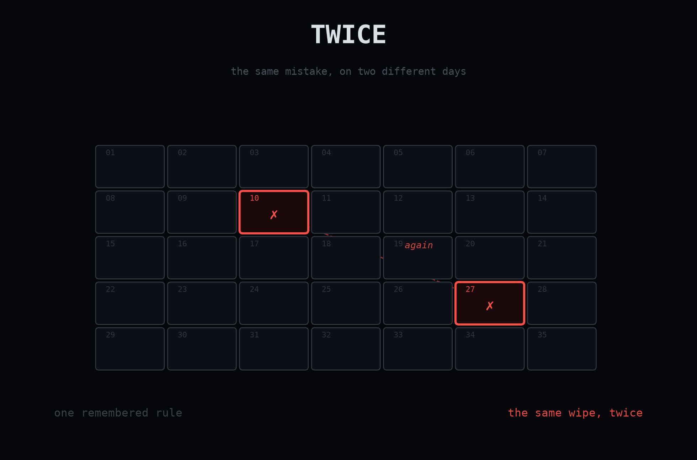
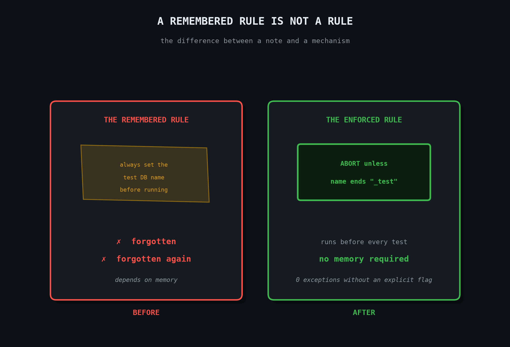

Twice

A test suite built to prove a system works was, by design, destructive: it deletes an entire dataset as part of running for real. The only thing standing between that and the live database was a developer remembering to point it somewhere safe first. That's not a safeguard. It ran against the real database. Once. Then it ran again.
A test suite built to prove a system works was, by design, destructive: it deletes an entire dataset as part of running for real. The only thing standing between that and the live database was a developer remembering to point it somewhere safe first. That's not a safeguard. It ran against the real database. Once. Then it ran again.
The first time, I told myself it was a fluke. A local config file, meant to make development just work without fifteen manual steps, had been quietly pointed at the real production settings. So running the test suite from that machine talked to the real thing by default. The only thing standing in the way was one setting I was supposed to override before hitting run.
I remembered. Most days.
The suite doesn't pretend. It runs the actual pipeline, the one that clusters and re-clusters and deletes whatever it decides doesn't belong anymore. That is the entire point of not faking it: you find out if the real thing works. It found out. It deleted the real dataset, live, because nothing told it not to.
I fixed what I thought was the actual problem. I wrote the rule down. Always set the database name to something ending in _test before running anything locally. I said it clearly enough, in enough places, that it would stick.
It didn't stick. It happened again.
A remembered rule is not a rule.
The second time didn't feel like bad luck. It felt like a fact arriving late: the fix I'd already shipped was a note to a future version of myself who I already knew wasn't reliable at eleven at night. A rule that only works if a tired person remembers it isn't a safeguard. It's a hope, wearing a safeguard's clothes.

So the real fix has nothing to do with memory. Before any test touches the database at all, one check runs first: does this database's name actually end in _test. If not, stop. Refuse. No warning, no "just this once." The only way past it is an explicit flag typed on purpose, for the rare case I genuinely mean it.
I didn't build that the first time, because the first time felt like an accident, and accidents get an apology and a promise, not an architecture. The second time is what taught me a promise is not a system. Only a system that says no by default, whether or not I'm paying attention, actually holds.
That's the part that doesn't automate: knowing the difference between a rule you wrote down and a rule the machine enforces whether you remember it or not. The tool doesn't care how sincerely you meant to be careful.
I keep finding these the hard way. If you'd rather learn them before you need to, come with me.
→ I write this weekly. [subscribe]